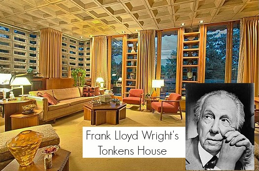

How things used to look. The Art Deco style began in Europe in the early years of the 20th century, with the waning of Art Nouveau. The term "Art Deco" was taken from the Exposition Internationale des Arts Decoratifs et Industriels Modernes, a world’s fair held in Paris in 1925.[28] Art Deco rejected many traditional classical influences in favour of more streamlined geometric forms and metallic color. The Art Deco style influenced all areas of design, especially interior design, because it was the first style of interior decoration to spotlight new technologies and materials.[29]
"How things looked after art Deco. Modern design grew out of the decorative arts, mostly from the Art Deco, in the early 20th century."[39] One of the first to introduce this style was Frank Lloyd Wright, who hadn't become hugely popularized until completing the house called Fallingwater in the 1930s. "Modern art reached its peak in the 1950s and 60s which is why designers and decorators today may refer to modern design as being "mid-century."[39] Modern Art does not refer to the era or age of design. "Modern art is not the same as contemporary design, which is a term that interior designers apply to a shifting group of recent styles and trends."
Arab Materials[edit] “How things look in different cultures. Majlis painting”, also called nagash painting, is the decoration of the majlis or front parlor of traditional Arabic homes in the Asir province of Saudi Arabia and adjoining parts of Yemen These wall paintings, an arabesque form of mural or fresco, show various geometric designs in bright colors: “Called 'nagash' in Arabic, the wall paintings were a mark of pride for a woman in her house.